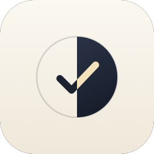

Halftik
Ta check-list et un rapport toutes les 30 minutes, pour savoir exactement ce que tu as fait de ta journée. Sur iPhone et sur Mac.
Bientôt sur l'App StoreCheck-list
Coche tes tâches : elles disparaissent d'elles-mêmes 30 minutes plus tard.
Rapport toutes les 30 min
Un rappel à chaque demi-heure, de 7 h à 23 h, pour noter ce que tu as fait.
D'une heure à une autre
Une réunion de 9 h à 11 h ? Un seul rapport remplit tous les créneaux d'un coup.
Historique
Chaque journée, avec ses horaires, ses rapports, ses tâches faites et son bilan.
iPhone et Mac
Ton compte synchronise tout entre tes appareils. Sur Mac, Halftik vit aussi dans la barre des menus.
0,99 € à vie
Un seul paiement, sans abonnement, sans publicité et sans pistage.